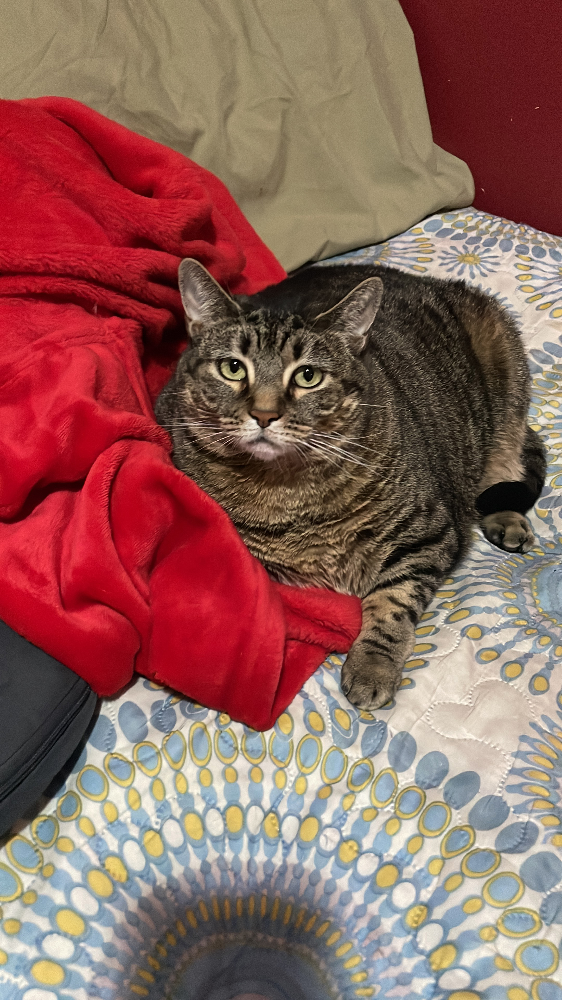
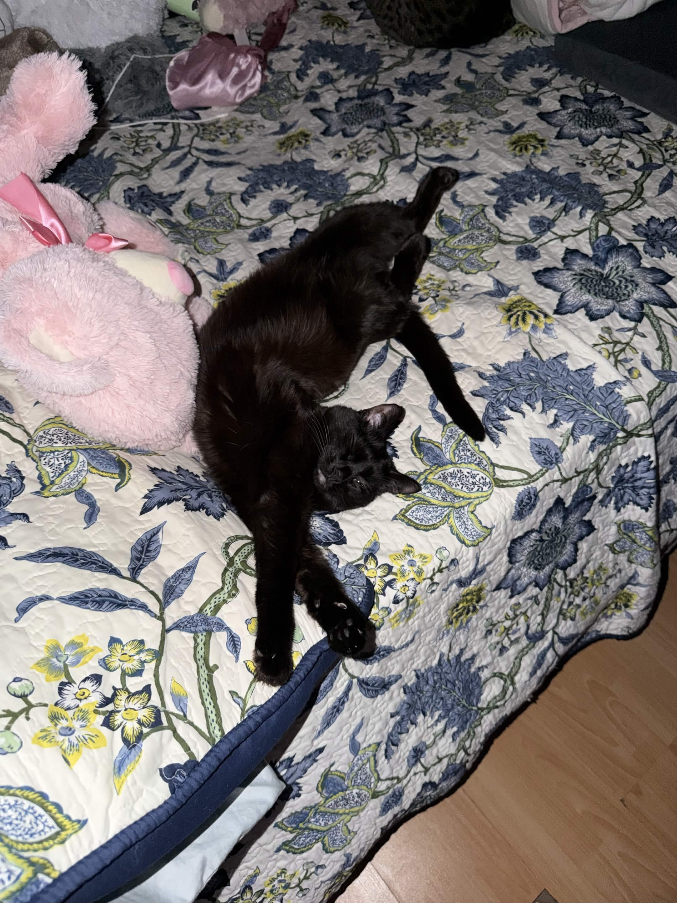
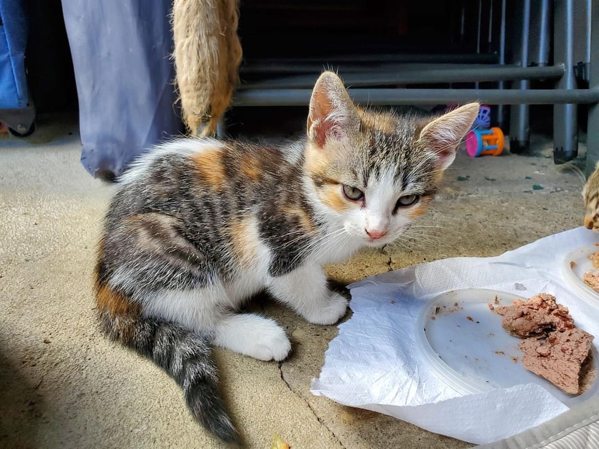

Ever since I was young, I’ve always felt a deep connection with animals. From tiny fish to giant elephants, every animal has always fascinated me. Over the years, I realized that helping animals in need became something truly important to me. Rescue animals deserve love, patience, and a safe home where they can feel protected.
This website tells the stories of my rescue cats: Ace, Spooky, and Meech. Each of them came from different situations and changed my life in their own unique ways. Through these pages, I want to share their stories and hopefully inspire others to care for and help animals whenever possible.

Ace
Ace was one of the first cats who truly showed me how powerful trust and companionship can be.
Read Ace's Story
Spooky
Spooky brought energy, personality, and comfort into my life during difficult moments.
Read Spooky's Story
Meech
Meech’s rescue story reminded me how important kindness and quick action can be for abandoned animals.
Read Meech's Story